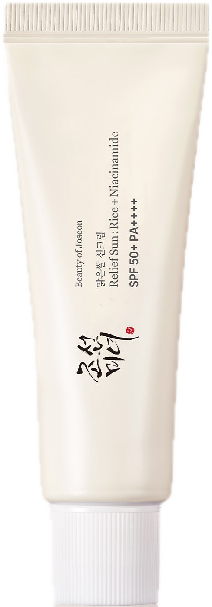
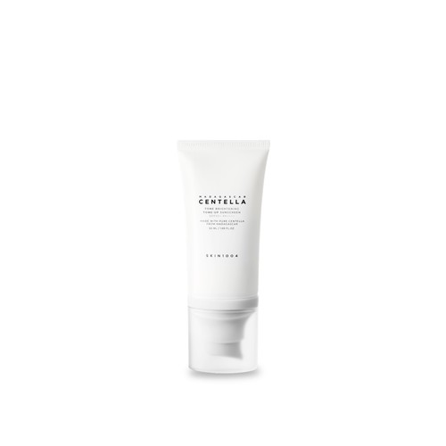

Home / The K-Beauty Edit / Korean sunscreens
The SPF edit Shopping guide
Korean Sunscreens on YesStyle: Which One Is Right for You?
Three much-loved formulas, three slightly different reasons to choose them. Here is how to find the one that makes sense for your skin and your morning routine.
start with SPF.THREE FORMULAS, DECODED

01 / RELIEF SUN
02 / WATER-FIT 03 / BIRCH JUICE
03 / BIRCH JUICEA closer look at three Korean SPF50+ PA++++ formulas sold on YesStyle. Packaging may change.
How we chose: We compared the products' current brand and retailer information, SPF labels and stated textures. We have not personally tested these formulas or conducted a head-to-head wear test. Our recommendations are starting points, not guarantees about how a product will feel on your skin. Product pages were checked November 28, 2026.
Shopping note: The product buttons link directly to YesStyle. They do not currently contain affiliate tracking; availability and packaging can vary by destination.
Choosing a sunscreen online can feel oddly difficult: three tubes can all say SPF50+ and still leave you with very different finishes. One may feel like a moisturizer; another may suit you better under a lighter routine. The useful question is not which one is universally "best," but which one you are happy to apply generously and reapply.
Below, we compare three popular Korean sunscreens on YesStyle using the product information available at the time of research. The texture descriptions come from the brands or retailer; how a sunscreen sits on skin, under makeup or around your eyes varies from person to person.
01 — The quick comparison
Three Korean sunscreens on YesStyle, at a glance
| Formula | What to expect | Consider it if |
|---|---|---|
| Beauty of Joseon Relief SunSPF50+ PA++++ | Creamy; the brand describes a dewy finish. | You enjoy moisturizer-like SPF. |
| SKIN1004 Water-Fit Sun SerumSPF50+ PA++++ | Serum-style; the retailer describes it as fast-absorbing. | You prefer a lighter-feeling layer. |
| ROUND LAB Birch JuiceSPF50+ PA++++ | Moisturizing formula with birch sap and hyaluronic acid. | You want hydration alongside SPF. |
The ratings above refer to the global versions linked below. They are label claims, not results of an independent test by Decode K-Beauty. Check the exact product page and package for your market.
01 / The creamy everyday SPF
Beauty of Joseon Relief Sun
If you like a sunscreen that feels closer to a light face cream, Relief Sun is a useful place to start. Beauty of Joseon describes the formula as creamy yet lightweight, with rice extract and niacinamide, and a dewy look on the skin. The global tube is labeled SPF50+ PA++++.1
What to consider: A radiant finish is not the same as a matte one. If your skin gets shiny or you layer several rich products, you may prefer something less moisturizing. Your existing moisturizer may still be useful if your skin is dry.
Version note: The brand says its original Rice + Probiotics was renamed Rice + Niacinamide without changing the formula. You may see either name on the packaging; check the selected version before ordering.
View Relief Sun on YesStyle02 / The serum-style SPF
SKIN1004 Hyalu-Cica Water-Fit Sun Serum
Despite the name, this is a sunscreen, not a hydrating serum to wear underneath another SPF. YesStyle describes this global version as fast-absorbing and lists centella asiatica and hyaluronic acid among its ingredients. Its label is SPF50+ PA++++.2
What to consider: It is an option for someone who prefers a lighter-feeling skincare routine, but "serum" does not guarantee a completely matte finish or that the formula will suit acne-prone or sensitive skin. If your skin reacts easily, check the full ingredient list and introduce it cautiously.
Version note: YesStyle also lists a separate UV OTC version. Do not assume the two have identical filters, ingredients or labeling; check the exact version you are buying.
View Water-Fit on YesStyle03 / The moisture-minded SPF
ROUND LAB Birch Juice Moisturizing Sunscreen
ROUND LAB's global Birch Juice sunscreen is another SPF50+ PA++++ option. Its YesStyle listing highlights birch sap and hyaluronic acid in a moisturizing formula. Consider it if your morning routine tends to leave your skin feeling dry and you enjoy a more hydrated-looking finish.3
What to consider: Moisturizing sunscreen does not automatically replace a moisturizer. Add one underneath if your skin needs it, and test the combination under your makeup rather than assuming it cannot pill or feel shiny.
Version note: This is the global Birch Juice Moisturizing Sunscreen, not the separately named U.S. UVLOCK product. Formulas and labeling can differ by region.
View Birch Juice on YesStyle02 — Make it personal
How to choose your Korean sunscreen
Start with the finish you actually like
Dry-feeling skin may appreciate a creamier, more moisturizing formula such as Relief Sun or Birch Juice. If you dislike the sensation of multiple layers, the serum-style SKIN1004 may be a better starting point. These are texture preferences, not rules: oily skin can be dehydrated, and dry skin can dislike a dewy finish.
Look beyond the words "no white cast"
The retailer describes these formulas as leaving little or no white cast. That is useful context, not a promise for every skin tone, amount or combination of products. If you can, try a small size or check photos from people with a skin tone similar to yours. Give the full recommended amount time to settle before deciding how it looks.
Check your own sensitivities
Centella, rice and birch are interesting skincare ingredients, but none makes a product universally non-irritating. Look at the full ingredient list if you know a particular ingredient bothers you. If a product stings or causes a persistent rash, stop using it and seek advice from a qualified clinician.
03 — The important part
How to use sunscreen properly
The American Academy of Dermatology recommends sunscreen with broad-spectrum protection, SPF 30 or higher and water resistance, used alongside shade and protective clothing.4 Here's how to put that advice into practice:
- Use enough. Apply generously to exposed skin, including your face, ears and neck. The AAD suggests at least one teaspoon for the face; use enough for all other exposed areas as well.
- Apply before going outdoors. The AAD recommends applying sunscreen about 15 minutes before going outside; follow your product's directions too. If you wear makeup, sunscreen goes after skincare and before makeup.
- Reapply outdoors. Reapply at least every two hours and immediately after swimming or sweating. For swimming or heavy sweating, choose a sunscreen specifically labeled water resistant and follow its directions.
- Add other protection. Seek shade and wear protective clothing, a hat and sunglasses. Sunscreen alone is not a pass to stay in the sun indefinitely.
We did not establish water-resistance claims for all three global formulas in this guide. Do not use the absence of a white cast, a high SPF or the word "serum" as proof of water resistance. The FDA notes that no sunscreen is waterproof.5
04 — Your questions
Frequently asked questions
What does SPF50+ PA++++ mean?
SPF is a measure primarily of protection against sunburn-causing UVB radiation. PA is a separate labeling system used to indicate UVA protection; PA++++ is its highest displayed category.6 Neither label tells you that a sunscreen is waterproof or how it will feel on your skin. Read the label in your market and look for appropriate UVA and UVB protection.
Are Korean sunscreens better than other sunscreens?
Not automatically. A comfortable texture can help you wear sunscreen consistently, but protection depends on the formula, its labeling, how much you apply and whether you reapply it. A suitable, properly labeled sunscreen from another country can be an excellent choice too.
Can I use these sunscreens under makeup?
They are marketed for daily wear, and many people do layer sunscreen under makeup. Results depend on your skin and the products involved. Let your skincare and sunscreen settle, then apply makeup gently. If the layers pill, try using fewer products or changing how you layer them; do not skimp on sunscreen to make makeup look smoother.
Can I buy the same formula in every country?
Not necessarily. A familiar product name can have a different formulation, SPF label or availability depending on the market. The FDA advises reading imported sunscreen labels to understand potential differences from U.S. products. Check shipping restrictions and the product label for your location.
The takeaway
Your best sunscreen is the one you will use
Relief Sun, Water-Fit and Birch Juice are three different starting points, not a universal ranking. Choose for your preferred finish, check the version and label, and save water-resistant formulas for the situations that call for them.
Read next: a simple winter skincare routineSources and further reading
- Beauty of Joseon: Relief Sun product details and formula name change; YesStyle listing.
- YesStyle: SKIN1004 Water-Fit Sun Serum.
- YesStyle: ROUND LAB Birch Juice Moisturizing Sunscreen.
- American Academy of Dermatology: How to apply sunscreen.
- U.S. Food and Drug Administration: Sunscreen and sun protection.
- Paula's Choice: Understanding the PA sunscreen rating system (medically reviewed).
Product information was checked November 28, 2026. Formulas, packaging, prices and availability can change. This guide is educational and is not a substitute for individual medical advice.